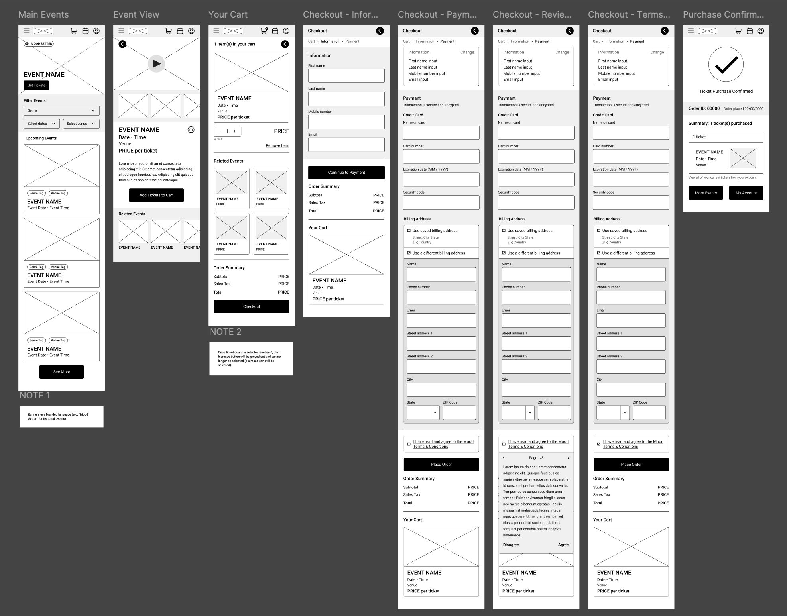
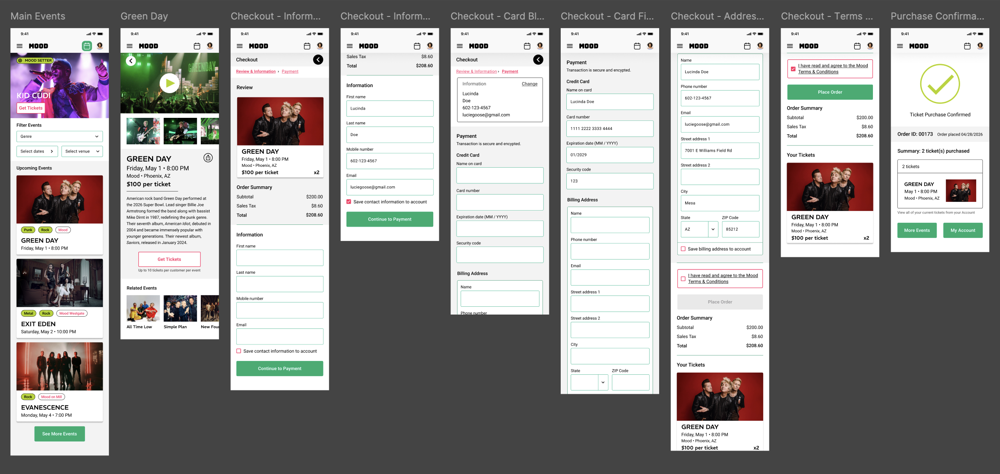
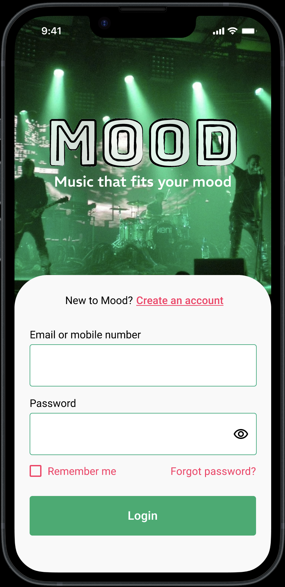
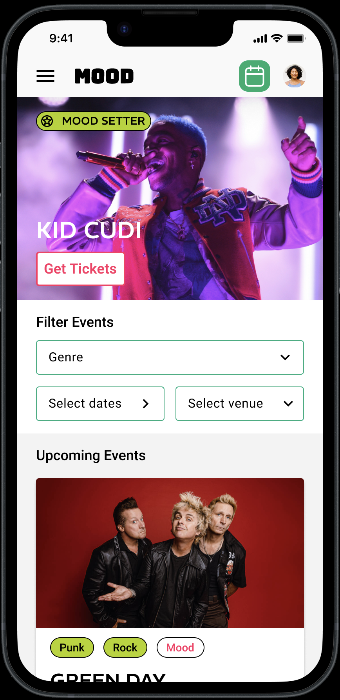
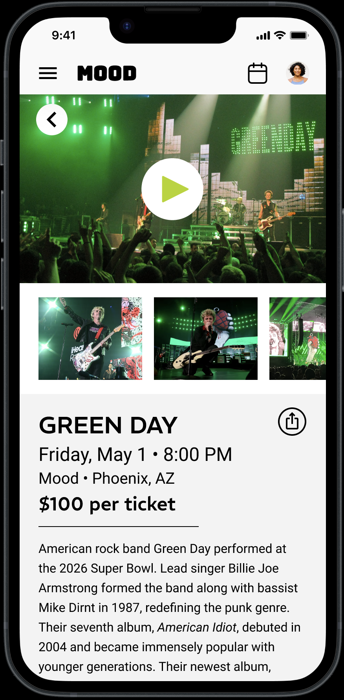
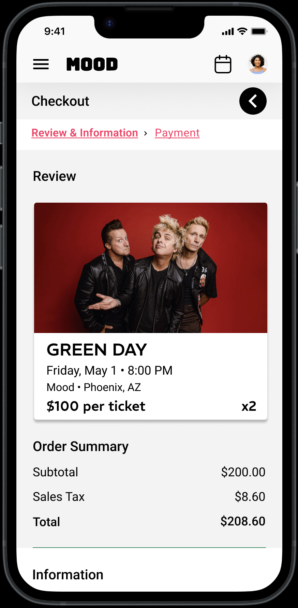

Project Overview
Objective
Designed a mobile event discovery and ticketing app prototype focused on streamlined ticket purchasing, account management, and event browsing. Prioritized intuitive filtering and clear ticket access, while improving user confidence through enhanced venue labeling and simplified navigation.
Project Links
User Flows
1. Sign Up → Verification & Confirmation → Main Events → Event Detail Page
2. Main Events → Apply Filters → Select Event
3. Select Event → Choose Ticket Quantity → Checkout → Purchase Confirmation
4. Customer Account → View Purchased Tickets → Select Ticket → Display Barcode for Entry
Design Focus
Streamlined purchase flow, clear event filtering, intuitive account access, and improved user clarity through labeling. Emphasis on reducing friction, minimizing steps, and aligning with common mobile interaction patterns for product purchase.
Evidence
High-fidelity Figma prototype demonstrating four complete user flows, including sign-up, filtering interactions, ticket purchase, and ticket retrieval. Screens illustrate navigation patterns, form interactions, filtering states, and barcode-based ticket display.
Process
Research, Iteration & Refinement
The project began with gathering user requirements for the mobile application from the stakeholder. Research was conducted to further understand the business and audience, and user personas were drafted to allow for a more comprehensive user-focused design approach.



Screens
Flow Highlights




Project Demonstration
Prototype Walkthrough
This presentation demonstrates the complete prototype, including user registration, event browsing, ticket purchasing, and ticket retrieval workflows. Presentation materials were created to match company branding, and detailed explanations were provided to help non-technical stakeholders understand the material.
Design Notes
What Reviewers Should Understand
- Cart-free purchase flow shortens time to checkout compared to traditional e-commerce patterns
- Filtering is designed to support multi-criteria combinations (date, venue, genre) for efficient event discovery
- Anticipates incomplete user profiles by deferring required data entry to checkout, improving onboarding completion rates